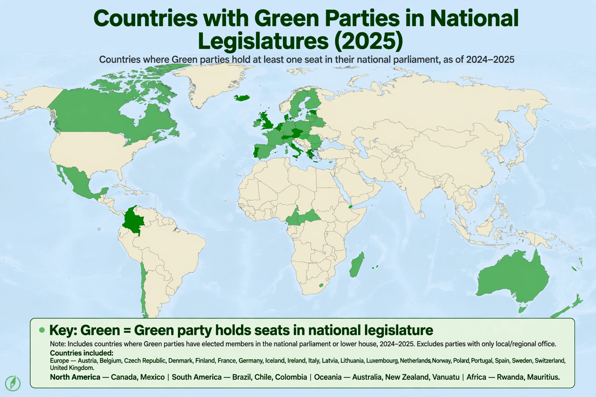

A Green party is a formally organised political party based on the principles of green politics, such as social justice, environmentalism, and nonviolence. Green parties exist in most countries with democratic systems, and many are members of the Global Greens federation, founded in 2001.
The United Tasmania Group, formed in Australia in 1972 to oppose the flooding of Lake Pedder, is often considered the first green party. In Europe, the German party Die Grünen (founded 1980) became the model for many successors after entering the federal parliament in 1983 and later joining a coalition government with the Social Democrats in 1998. Green parties expanded during the 1980s and 1990s alongside growing environmental awareness and opposition to nuclear power and weapons.
Green parties historically emphasised grassroots democracy, decentralised organisation, gender-balanced leadership (many adopted co-leadership by one woman and one man), and consensus decision-making, though most have professionalised over time. Their platforms combine environmental policy with social welfare, civil liberties, and pacifist or restrained foreign policies.
Greens have served in national governments in countries including Germany, Finland, Sweden, Belgium, Ireland, Austria, and New Zealand, and are strongly represented in the European Parliament through the Greens/European Free Alliance group. In first-past-the-post systems, such as those of the United Kingdom, the United States, and Canada, national Green representation has been more limited, though Greens have won individual seats and lead some regional and municipal governments.
See also: Green politics · Alliance 90/The Greens · European Green Party